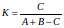
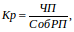
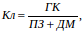
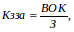
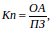
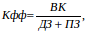
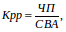

Для оцінки результатів фінансово-господарської діяльності суб'єктів господарювання застосовуються такі групи показників:
некомерційні (соціально-економічні) показники;
комерційні показники;
показники стану активів та інвестиційно-інноваційної діяльності;
показники фінансової ефективності (показники, що характеризують ефективність фінансових аспектів діяльності).
Для визначення рівня дотримання та виконання основних законодавчих положень корпоративним сектором України застосовується коефіцієнт Танімото.
До некомерційних (соціально-економічних) показників належать: середньооблікова кількість штатних працюючих; середня заробітна плата; заборгованість із заробітної плати; витрати на соціальні заходи (порівняно з відповідним періодом попереднього року).
До комерційних показників належать: обсяги (темпи зростання) чистого доходу (виручки) від реалізації продукції (товарів, робіт, послуг), чистого прибутку (збитку); частина прибутку (доходу), що перераховується до державного бюджету; дивіденди, нараховані на акції (частки), що належать державі в статутному фонді господарських товариств (порівняно із затвердженими обсягами згідно з фінансовими планами суб'єктів господарювання).
До показників стану активів та інвестиційно-інноваційної діяльності належать: вартість активів; вартість власного капіталу; обсяг капітальних інвестицій; ступінь зносу основних засобів (порівняно з попередніми показниками).
До показників ефективності фінансових аспектів діяльності належать: рентабельність активів, рентабельність діяльності, коефіцієнт фінансової стійкості, коефіцієнт покриття, коефіцієнти загальної та абсолютної ліквідності, коефіцієнт забезпечення власними коштами (порівняно з нормативними чи попередніми їх значеннями).
Коефіцієнт Танімото вимірює міру схожості двох безлічей. Він використовується для того, щоб оцінити подібність зразків, представлених списками властивостей і визначається за формулою:

де К - коефіцієнт Танімото, ум. од;
A – кількість елементів у першій безлічі, шт;
В - кількість елементів у другій безлічі, шт;
С – кількість загальних елементів у перетинані двох безлічей, шт.
Середня заробітна плата – економічний показник, який характеризує розмір нарахованої заробітної плати, яка припадає на одного працівника підприємства, організації. Визначається поділом загальної суми нарахованої заробітної плати на середню чисельність працівників.
Коефіцієнт рентабельності (кР) діяльності характеризує ефективність господарської діяльності підприємства і визначається за формулою:

де – чистий прибуток підприємства, тис. грн;
– чиста виручка від реалізації продукції (робіт, послуг), тис грн.
Коефіцієнт абсолютної ліквідності (Кл) – показник, що характеризує ту частину короткотермінових фінансових зобов'язань підприємства, яка може бути сплачена за рахунок першокласних ліквідних активів (грошових коштів та їх еквівалентів), тобто спроможність підприємства негайно погасити свою короткотермінову кредиторську заборгованість. Теоретичне оптимальне значення цього показника становить приблизно 0,2–0,25 і визначається за формулою:

де – грошові кошти та їх еквіваленти, тис. грн;
ПЗ – поточні зобов’язання, тис. грн;
ДМ – доходи майбутніх періодів, тис. грн.
Коефіцієнт забезпеченості власними коштами (Кзза) характеризує рівень забезпечення підприємства власними коштами і визначається за формулою:

де ВОК – власні обігові кошти, тис. грн;
З – запаси, тис. грн.
Коефіцієнт покриття (Кn) показує достатність ресурсів підприємства, які можуть бути використані для погашення його поточних зобов'язань. Визначається за формулою:

де ОА – оборотні активи, тис. грн;
ПЗ – поточні забов’язання, тис. грн.
Коефіцієнт фінансової стійкості (Кфф) характеризує здатність підприємства залучати зовнішні джерела фінансування і визначається за формулою:

де ВК – власний капітал, тис. грн;
ДЗ – довгострокові забов’язання, тис. грн;
ПЗ – поточні забов’язання, тис. грн.
Коефіцієнт рентабельності активів (Крр) характеризує ефективність використання активів підприємства і визначається за формулою:

де ЧП – чистий прибуток, тис. грн;
СВА – середньорічна вартість активів, тис. грн.